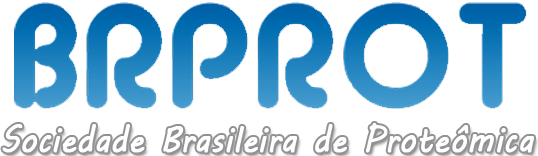

Sociedade Brasileira de Proteômica
A Sociedade Brasileira de Proteômica (BrProt) é uma entidade científica que reúne pesquisadores, professores e estudantes interessados no estudo da proteômica — área dedicada à investigação das proteínas e suas funções nos sistemas biológicos. Seu principal objetivo é promover o desenvolvimento da proteômica no Brasil, incentivando a pesquisa científica, a formação de recursos humanos e a troca de conhecimento entre instituições.
BrProt atua na organização de congressos, cursos e eventos científicos, além de estimular colaborações nacionais e internacionais, contribuindo para o avanço da ciência e da inovação nas áreas biomédica e biotecnológica.
Entre seus laboratórios parceiros está o Núcleo de Proteômica Funcional (NPF), do Instituto de Ciências Biológicas da UFMG. O NPF tem participação ativa na sociedade, sendo coordenado pelo Professor Dr. Thiago Verano Braga, que exerce o cargo de Secretário-Geral da BrProt. Essa posição estratégica fortalece a integração do núcleo com a comunidade científica, possibilitando diversas parcerias em âmbito nacional e internacional e ampliando o impacto da proteômica no Brasil.
Saiba mais em: Sociedade Brasileira de Proteômica
